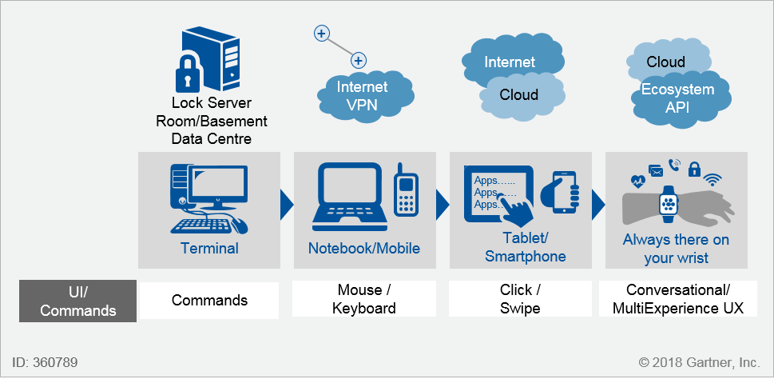
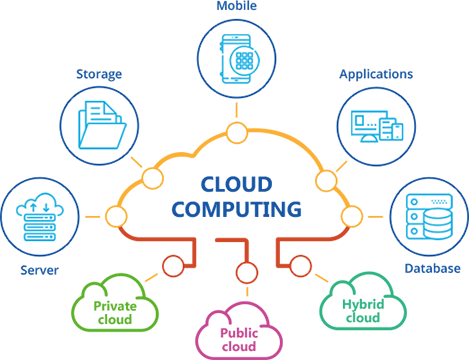

As defined by Gartner, hyper-automation “deals with the application of advanced technologies, including artificial intelligence (AI) and machine learning (ML), to increasingly automate processes and augment humans. Hyper-automation extends across a range of tools that can be automated, but also refers to the sophistication of the automation (i.e., discover, analyse, design, automate, measure, monitor, reassess.)” In simple terms, hyper-automation refers to the mixture of automation technologies that exist to augment and expand human capabilities.
Multi-experience development platform. A multi-experience development platform (MXDP) is a development platform that is used for developing not just mobile and web applications, but also chat, voice, augmented reality and wearable experiences.
Distributed cloud is the application of cloud computing technologies to interconnect data and applications served from multiple geographic locations. Distributed, in an information technology (IT) context, means that something is shared among multiple systems which may also be in different locations. Three significant characteristics of distributed systems are: concurrency of components, lack of a global clock, and independent failure of components. Examples of distributed systems vary from SOA-based systems to massively multiplayer online games to peer-to-peer applications.
